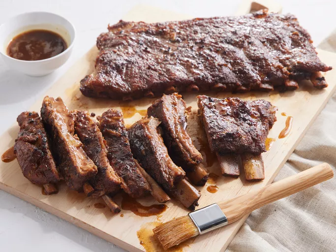

Tender Pork Spare Ribs
Ref.

Description
This pork spare rib recipe was inspired by a celebrity chef's braising method for baby back ribs. I changed the seasonings and increased the cooking time, and I have been very pleased with them every time. These spare ribs are really tender, and the meat is so flavorful that you don't have to add BBQ sauce unless you want to. My neighbor is the one who told me about the fajita seasoning, and she was right on!
Ingredients
- 1 cup brown sugar
- 1/2 cup fajita seasoning
- 2 tablespoons Hungarian sweet paprika
- 2 racks pork spareribs, fat trimmed
- 1 cup beer
- 3 cloves garlic, minced
- 1 tablespoon honey
- 3 tablespoons Worcestershire sauce
- 1 tablespoon prepared brown mustard
Steps
- Gather all ingredients.
- Mix brown sugar, fajita seasoning, and paprika in a bowl.
- Rub both sides of pork spareribs with the brown sugar mixture.
- Place spareribs in a 9x13-inch baking pan; cover and refrigerate 8 hours or overnight.
- Preheat the oven to 250 degrees F (120 degrees C). Whisk together beer, garlic, honey, Worcestershire sauce, and mustard in a bowl. Set aside.
- Tear off 2 large sheets of heavy-duty aluminum foil and lay them shiny-side down. Place a rack of spare ribs on each sheet, meaty-side up.
- Tear off 2 more sheets of foil and place them on top of the spare ribs, shiny-side up. Begin tightly folding the edges of the foil together to create a sealed packet.
- Just before sealing completely, divide beer mixture evenly into each packet.
- Complete the seal. Place the packets side-by-side on an 11x14-inch baking sheet.
- Bake ribs in the preheated oven until the ribs are very tender, 3 1/2 to 4 hours.
- Carefully open each packet and drain drippings into a saucepan. You may only need the drippings from one packet.
- Place ribs on a foil-lined baking sheet and set aside.
- Heat the saucepan over medium-high and simmer drippings until the sauce begins to thicken, about 5 minutes.
- Brush the thickened sauce over ribs.
- Preheat the broiler and set the oven rack about 6 inches from the heat source. Return ribs to the oven and broil until the sauce is lightly caramelized, 5 to 7 minutes.
Back to All Recipes